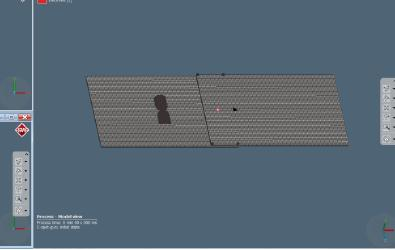

I am a recent graduate from the UAEU, with a strong focus on drone research and development. During my academic journey, I have been fortunate to excel in areas such as drone-based design, manufacture, and control of a fully autonomous flight. Through leading innovative projects and achieving breakthroughs, I have had the privilege of receiving recognition and establishing a positive reputation within the industry. With an unwavering commitment to innovation, my goal is to explore new possibilities and contribute significantly to the field of drone technology. I am genuinely excited about pushing the boundaries of what drones can accomplish in the future, driven by my past accomplishments and dedication to excellence. If you have any questions feel free to reach out on LinkedIn, Github, or by email!
DOWNLOAD MY RESUME
Designed and Developed a Detumbling algorithm for AlAinSAT-1 on MATLAB and utilized system identification algorithm to deduce the transfer function
Along completing my courses, I contributed in several publications and projects related to drones, manufacturing, and CAD modelling
0
CUPS PER DAY
0
PROJECTS
0
PUBLICATIONS
‘The objective of our project is to develop a user-friendly autonomous thermal human detecting drone for security purposes. Our main goal, in our one-year graduation project, is to minimise the danger that the manpower could face in specific conditions. To achieve this, we manufactured an octa-rotor with a unique design and rotor configuration that allows it to carry up to 6 kilograms of payload, and has an endurance of 15 minutes. The octa-rotor was equipped with a LEPTON FLIR 3.5 module which has the capability of showing temperature variations between the human body and the environment at a height of 10 meters and at an angle of 40 degrees. The data provided from the drone and thermal camera is transmitted live to the ground station providing the user with important parameters, such as, the location and the live footage of the enviroment of surveillance.’
In our innovative project, we employed an instrumented glove equipped with cutting-edge technology to seamlessly translate physical hand movements into precise commands for controlling a drone. By combining an Arduino Nano microcontroller, an Inertial Measurement Unit (IMU), and a combination of potentiometers and switches, we created a sophisticated interface. This unique setup allowed us to effortlessly switch between different flight modes and activate various safety features with ease. The IMU captured and analyzed the motion data from the glove, while the Arduino Nano processed the signals and translated them into real-time instructions for the drone. The integration of these components resulted in a seamless and intuitive control system that revolutionized the way we interact with drones.
I utilized Fusion 360, a powerful CAD software, to meticulously design a bespoke wing for my 3D printed fixed-wing RC plane. Leveraging the advanced capabilities of Fusion 360, I crafted a wing design that perfectly suited my specifications and requirements. To materialize my creation, I harnessed the capabilities of various cutting-edge 3D printers, including the Ultimaker S5, Creality 6 Max, FlashForge Finder, and Inventor II. These state-of-the-art printers provided exceptional precision and reliability, enabling me to bring my intricate wing design to life with remarkable accuracy and detail.

In collaboration with the Mohammed Bin Rashid Space Center, we embarked on an extraordinary project to develop a groundbreaking innovation known as the Drover—a fusion of a drone and a rover. This pioneering creation aimed to enhance the capabilities and applications of drones and rovers in outer space. By incorporating the ability to fly over obstacles, the Drover revolutionized the efficiency of space exploration. This innovative design significantly reduced the time required for the rover to traverse from one point to another, overcoming obstacles that would otherwise impede its progress. The Drover not only expanded the horizons of space exploration but also opened up new possibilities for optimized and streamlined missions beyond our atmosphere.
This work is projected into discovering the possibility of applying 3d printing technologies in special needs education. The notion behind this work is the many advantages of this technology that makes it attractive for this kind of education. Many tools and gadgets used in special needs occupational and physical therapy are expensive and difficult to be found on store shelves. Hence, a few-hundred dollars desktop 3d printer can solve many problems associated with the cost and availability of these tools and gadgets.We believe this work will not only provide a cheaper and quicker alternative for special needs schools, it will also provide a sustainable solution for in-house special training practised by the parents and/or the guardian of the special student.
The research project focuses on investigating the impact of resistance spot welding parameters on the strength of welds in metal sheets, a widely used technique in the automotive and aviation industries. Using the welding simulation software Simufact Welding 2020, various parameters such as holding time, squeeze time, welding current, force applied, and welding time are systematically examined. Each parameter is individually varied while keeping others constant within specified ranges. Through extensive analysis, optimal regions for the spot-welding parameters are identified. These include a squeeze time between 0.9 s and 0.95 s, welding current ranging from 6.5 kA to 7.5 kA, welding time from 0.15 s to 0.4 s, holding time of 30 ms, and electrode force between 3.2 kN and 3.4 kN. Within these parameter ranges, the spot welds exhibit the highest yield stress, indicating superior strength. By exploring and determining the ideal parameter settings, this research aims to optimize resistance spot welding processes and enhance the overall quality of welded joints in metal sheets.
This project explores the application of photogrammetry as a promising quality control technique in the manufacturing process. The objective is to evaluate the feasibility of integrating the Spider 3D scanner and Control-X inspection software to assist a local aerospace manufacturing company in enhancing their inspection and quality control procedures. The Spider 3D scanner represents an advanced technology that has proved to be valuable for our research. It offers highly accurate measurements, up to three decimal places, without any errors. Furthermore, the Control-X software, known for its versatility, has potential for various applications, including reverse engineering and quality control. By comparing conventional methods with the latest photogrammetry technology, this research aims to highlight the advantages of the latter. The results demonstrate that the measurements obtained through this approach are accurate and fall within an acceptable range of error for linear geometric features. Moreover, photogrammetry surpasses manual methods when inspecting form and shape geometrical features, including dimensions such as length, thickness, and other relevant characteristics of interest.